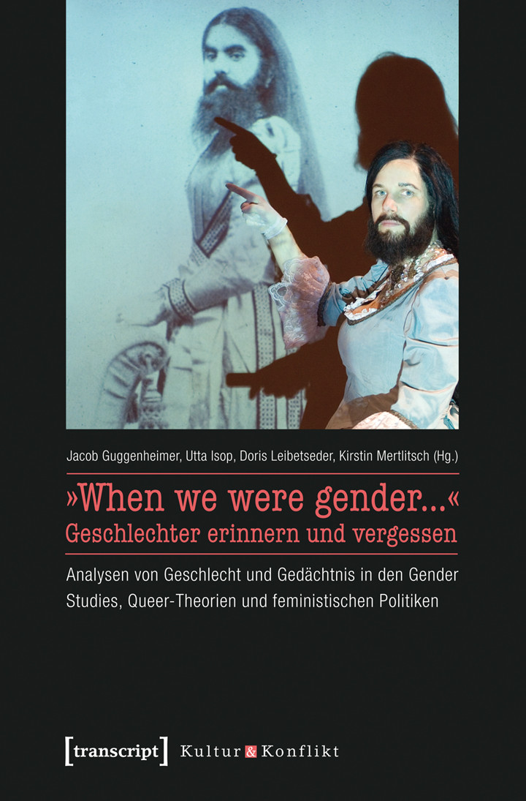
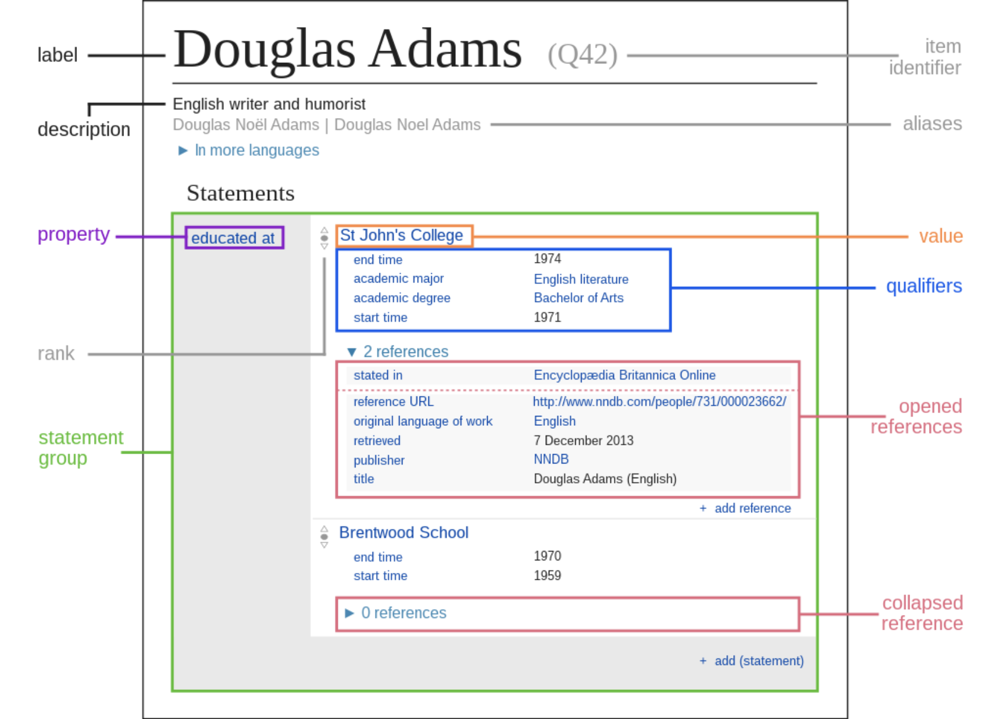

Digital Humanities 2022
Modelling Gender Diversity
Research Data Representation Beyond the Binary
Viktor J. Illmer Freie Universität Berlin
Lisa Poggel Freie Universität Berlin
Franziska Diehr Robert Koch Institute
Lindsey Drury Freie Universität Berlin
Archiving the Colonial Concept
of the Gender Binary

|

|

|
|
|---|---|---|---|

|

|

|
 |
Status Quo Representation of Gender in Established Standards
German National Library
Differentiated Person gender Gender Value
- male
- female
- not known
Deutsche Nationalbibliothek (2019a, 2019b)
ISO 5218
- 0 – not known
- 1 – male
- 2 – female
- 9 – not applicable
International Organization for Standardization (2004)

vCard
sex
- M – male
- F – female
- O – other
- N – not applicable
- U – unknown
gender-identity
free-form text
Perreault (2011)
Text Encoding Initiative
person
personGrp
persona
<sex>
@sexteidata.sex
Suggestion: Use vCard sex or ISO 5218
TEI Consortium (2021)
The other category

- Easy for the modeller
- Stigmatising and othering Kronk et al. (2021), Puckett et al. (2020)
Wikidata
P21 “sex or gender”
Introducing Gender Qualifiers
GSSO
- gender
- gender identity
- assumed gender
- experienced gender
- lived gender
- recorded gender
- gender modality
- gender state
Gender, Sex and Sexual Orientation Ontology (2022)
Adaptation
- gender
- assumed
- self-identified
- lived
- recorded
- gender modality
- transgender
- cisgender
- hijra
- ...
qualifiers
- gender
- gender identity
- assumed gender
- experienced gender
- lived gender
- recorded gender
- gender modality
- gender state
Qualifiers
Wikimedia Foundation (2016)
Examples
self-identified gender
Laxmi Narayan Tripathi

India
| instance of | Person | |
| gender |
hijra gender qualifier |
self-identified gender |
| gender modality |
transgender described by source |
Scroll.in (2016) |
Yuu Watase
Japan
| instance of | Person | |
| gender |
X-gender gender qualifier |
self-identified gender |
Public Universal Friend
North America
1752–1819
| instance of | Person | |
| gender |
female gender qualifier end date agender gender qualifier start date |
recorded gender 1776 self-identified gender 1776 |
assumed and recorded gender
Hastiin Tł’a
North America
1867–1937
| instance of | Person | |
| gender |
nádleehi gender qualifier berdache gender qualifier rank |
assumed gender recorded gender deprecated |
lived gender
Murray Hall
Britain/North America
1841–1901
| instance of | Person | |
| gender |
male gender qualifier female gender qualifier described by source rank |
lived gender self-identified gender recorded gender Nelson (2014) deprecated |
- Self-identified gender preferred over recorded and assumed gender
- Additional qualifiers further specify gender values
- Ranks mark recorded gender values as offensive and/or unreliable
Querying
Wikibase Ranks
-
 – Preferred rank
– Preferred rank
-
 – Normal rank
– Normal rank
-
 – Deprecated rank
– Deprecated rank
Queries return the highest-ranked statements by default.
Simple Query
SELECT ?item ?itemLabel ?gender ?genderLabel WHERE {
# Get instances of (P1) Person (Q51)
# Which have a gender property (P157)
?item wdt:P1 wd:Q51;
wdt:P157 ?gender.
SERVICE wikibase:label { bd:serviceParam wikibase:language "en". }
}
| Item | Gender |
|---|---|
| Laxmi Narayan Tripathi | hijra |
| Yuu Watase | X-gender |
| Public Universal Friend | female |
| Public Universal Friend | agender |
| Hastiin Tł’a | nádleehi |
| Murray Hall | male |
Detailed Query
SELECT ?item ?itemLabel ?gender ?genderLabel ?genderQualifier ?genderQualifierLabel ?rank ?genderModality ?genderModalityLabel WHERE {
# Get instances of (P1) Person (Q51)
# Which have a gender property (P157)
?item wdt:P1 wd:Q51;
wdt:P157 ?gender.
# Get rank and qualifier (P160)
?item p:P157 ?genderStatement.
?genderStatement wikibase:rank ?rank;
pq:P160 ?genderQualifier.
# Get modality (P158)
OPTIONAL { ?item wdt:P158 ?genderModality. }
SERVICE wikibase:label { bd:serviceParam wikibase:language "en". }
}
| Item | Gender | Gender qualifier | Rank | Gender modality |
|---|---|---|---|---|
| Laxmi Narayan Tripathi | hijra | self-identified gender | normal | transgender |
| Yuu Watase | X-gender | self-identified gender | normal | |
| Public Universal Friend | agender | self-identified gender | normal | |
| Public Universal Friend | female | recorded gender | normal | |
| Hastiin Tł’a | nádleehi | assumed gender | normal | |
| Hastiin Tł’a | berdache | recorded gender | deprecated | |
| Murray Hall | male | lived gender | normal | |
| Murray Hall | male | self-identified gender | normal | |
| Murray Hall | female | recorded gender | deprecated |
Gender as an Ontological Entity

CIDOC CRM
- Gender class and property removed in 2001
- “There is nothing more important about gender than about any other properties giving rise to a set of people” CIDOC CRM Special Interest Group (2002)
- Instead: Person has type Type
CRMsoc
-
E1 CRM EntityAll things in the universe of discourse
-
E2 Temporal Entity
All phenomena which happen over a limited extent in
time
-
socE Phase
Phases during the existence and evolution of an
instance of Physical Thing
- socE Gender
-
socE Phase
Phases during the existence and evolution of an
instance of Physical Thing
-
E2 Temporal Entity
All phenomena which happen over a limited extent in
time
CIDOC CRM Special Interest Group (2021),
Alamercery et al. (2019)
CRMsoc
- “Examples: Bruce Jenner was a male, and then a female (and took the name Caitlyn Jenner).” Alamercery et al. (2019)
- Distinction: Assigned gender at birth (AGAB) and gender identity Kronk et al. (2021), Mitchell (2017)
- It’s just a phase
Gender as a Conceptual Object
-
E1 CRM EntityAll things in the universe of discourse
-
E77 Persistent Item
Items that have persistent characteristic
-
E70 Thing
Discrete, identifiable, instances of Persistent Item
that are documented as single units
-
E71 Human-Made Thing
Discrete, identifiable human-made items that are
documented as single units
-
E28 Conceptual Object
Non-material products of our minds
- Gender
-
E28 Conceptual Object
Non-material products of our minds
-
E71 Human-Made Thing
Discrete, identifiable human-made items that are
documented as single units
-
E70 Thing
Discrete, identifiable, instances of Persistent Item
that are documented as single units
-
E77 Persistent Item
Items that have persistent characteristic
E28 Conceptual Object
“This class comprises non-material products of our minds and other human produced data that have become objects of a discourse about their identity, circumstances of creation or historical implication. The production of such information may have been supported by the use of technical devices such as cameras or computers.
Characteristically, instances of this class are created, invented or thought by someone, and then may be documented or communicated between persons. Instances of E28 Conceptual Object have the ability to exist on more than one particular carrier at the same time, such as paper, electronic signals, marks, audio media, paintings, photos, human memories, etc.
They cannot be destroyed. They exist as long as they can be found on at least one carrier or in at least one human memory. Their existence ends when the last carrier and the last memory are lost.”
CIDOC CRM Special Interest Group (2021)
Thank you for your attention!
Literature
Contact
Viktor J. Illmer v.illmer@fu-berlin.de
Lisa Poggel l.poggel@fu-berlin.de
Franziska Diehr diehrf@rki.de
Lindsey Drury l.drury@fu-berlin.de
Funded by the Deutsche Forschungsgemeinschaft (DFG, German Research Foundation) under Germany’s Excellence Strategy in the context of the Cluster of Excellence Temporal Communities: Doing Literature in a Global Perspective – EXC 2020 – Project ID 390608380.